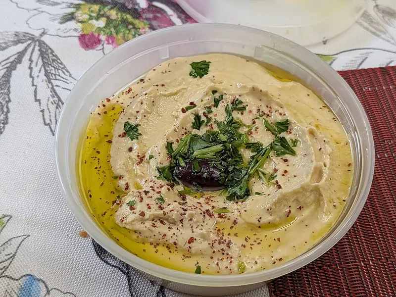

Фото: TechnoKittyCat, CC BY 4.0

Хумус
Гладкая паста из нута с кунжутом, чесноком и лимоном
120 мин6 порц.290 ккал на порциюБ 10 · Ж 16 · У 28Средиземноморская кухня
Продукты на 6 порц.
- Нут1,25 стак.
- Вода2000 мл
- Сода0,5 ч. л.
- Кунжут4 ст. л.
- Лимон0,5 шт
- Чеснок2 зуб.
- Оливковое масло3 ст. л.
- Зира0,5 ч. л.
- Соль1 ч. л.
- Паприка по желанию1 щеп.
Как готовить
- Замочите нут в холодной воде на 12 часов, затем слейте воду.
- Залейте нут свежей водой, добавьте соду и варите на слабом огне 1-1,5 часа, пока он не станет очень мягким и не будет легко раздавливаться пальцами. Отлейте стакан отвара.
- Подсушите кунжут на сухой сковороде на среднем огне 2-3 минуты до лёгкого золотистого цвета и измельчите блендером с 1 ст. л. масла в пасту.
- Сложите в блендер тёплый нут, кунжутную пасту, сок лимона, чеснок, зиру и соль.
- Пробейте 3-4 минуты, подливая отвар по ложке, пока масса не станет гладкой и кремовой.
- Выложите в миску, сделайте ложкой углубление, полейте оставшимся маслом и посыпьте паприкой.
Совет. Быстрый вариант: 2 банки консервированного нута (вес без жидкости около 480 г) вместо сухого, тогда замачивать и варить не нужно. Хранится в холодильнике 4 дня.